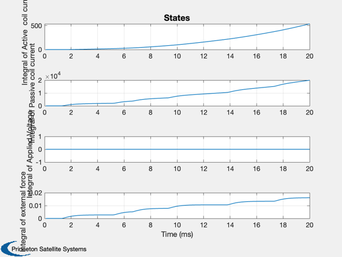
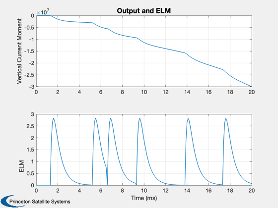

Tokamak Plasma Vertical Control
Simulates a model of the vertical position of an elongated plasma in a Tokamak. The vertical position is unstable and can be represented by one unstable mode and one stable mode and a time delay. Two major disturbances are due to the thyristor power supplies and the Edge Localized Modes (ELM).
Since version 1.
-------------------------------------------------------------------------
Reference: Scibile, L. and B. Kouvaritakis (2001.) "A Discrete Adaptive
Near-Time Optimum Control for the Plasma Vertical Position
in a Tokamak." IEEE Transactions on Control System
Technology. Vol. 9, No. 1, January 2001.
-------------------------------------------------------------------------
See also: RHSTPVC, SSTokamak, ELM, getabcd, TimeGUI, Plot2D
-------------------------------------------------------------------------
Contents
%-------------------------------------------------------------------------- % Copyright (c) 2001 Princeton Satellite Systems, Inc. % All rights reserved. %--------------------------------------------------------------------------
Constants. See HPH.m or FPH.m for definitions
----------------------------------------------
clear d; d.rAA = 35.0e-3; % Active coil resistance (Ohm) d.rVV = 2.56e-3; % Passive coil resistance(Ohm) d.lAV = 0.432e-3; % Active-passive coil mutual inductance (H) d.lAA = 42.5e-3; % Active coil self-inductance (H) d.lVV = 0.012e-3; % Passive coil self-inductance (H) d.lAP = 115.2e-6; % Mutual change inductance between the % active coils and plasma displacement (H/m) d.lVP = 3.2e-6; % Mutual change inductance between the % passive coils and plasma displacement(H/m) d.aPP = 0.4e-6; % Normalized destabilizing force % 0.4 to 0.6 e-6 H/m^2 d.g = SSTokamak( d ); % Generates a statespace model of a % tokamak. The output is the % vertical current moment of the % plasma current centroid. This % system is unstable. % Extract the a,b,c and d matrices from g %---------------------------------------- [d.a, d.b, d.c, d.d] = getabcd( d.g ); d.fP = 0; d.d600 = 0; d.tau1ELM = 6.0e-4; % Time constant 1 d.tau2ELM = 1.7e-4; % Time constant 2 d.kELM = 6.5; % Gain d.tRepELM = 48e-3; % Time (s) d.nDelay = 3; d.iP = 7e6;
The control sampling period and the simulation integration time step
---------------------------------------------------------------------
dT = .01/100;
Number of sim steps
--------------------
nSim = 200; tEnd = nSim*dT; tRepELM = 0;
Plotting arrays
----------------
tPlot = zeros(1,nSim); xPlot = zeros(6,nSim); % Stack for the delay %-------------------- delayStack = zeros(1,d.nDelay);
Initial conditions
-------------------
x = [0;0;0;0]; t = 0; tELM = 20e-3*rand; v = 0;
Run the simulation
See ELM.m which is a that gives you the disturbance in a Tokamak plasma due to edge localized modes (ELMs). Also see RHSTPVC.m which simulates a model of the vertical position of a plasma in a Tokamak. -------------------------------------------------------------------------
for k = 1:nSim % Simulate the delay %------------------- delayStack(end) = v + d.d600*sin(2*pi*600*t); delayStack(1:(end-1)) = delayStack(2:end); d.v = delayStack(1); d.eLM = ELM( d.tau1ELM, d.tau2ELM, d.kELM, tELM ); tELM = tELM + dT; if( t > tRepELM + rand*d.tRepELM ) tELM = 0; tRepELM = t; end x = RK4( 'RHSTPVC', x, dT, t, d ); t = t + dT; tPlot(k) = t; xPlot(:,k) = [x;d.c*x + d.d*[d.v;d.fP];d.eLM]; end
Plot results
Open loop results are displayed. --------------------------------
j = 1:k; tPlot = tPlot(j)*1000; yL = get( d.g, 'states' ); yL2 = { get( d.g, 'outputs' ), 'ELM' }; Plot2D( tPlot, xPlot(1:4,j),'Time (ms)',yL,'States') Plot2D( tPlot, xPlot(5:6,j),'Time (ms)',yL2,'Output and ELM') %-------------------------------------- % PSS internal file version information %-------------------------------------- % $Date$ % $Id: a6abdf98341bbed507a81918e6c1f38a3800394b $ 